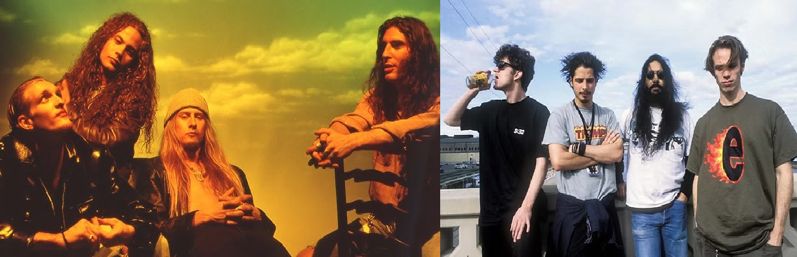

Sobre mim
Olá! Meu nome é Gabriel Furigo Knopf, tenho 20 anos e sou natural de Soledade. Atualmente, sou estudante do curso de Ciência da Computação na Universidade de Passo Fundo (UPF).
Sempre fui apaixonado por tecnologia, desde criança, especialmente influenciado por jogos. Comecei a tentar criar mods para Minecraft ainda muito jovem, o que despertou meu interesse por programação e desenvolvimento.
Gosto bastante de programar em linguagens de alto nível, embora também tenha experiência com linguagens de baixo nível e conhecimentos sobre hardware. Estou sempre estudando novas tecnologias e buscando evoluir como desenvolvedor.
Nos meus momentos de lazer, gosto de escutar música — especialmente rock. Minhas bandas favoritas são Alice in Chains e Soundgarden.
Também gosto de assistir filmes e séries como Supernatural, The Walking Dead, Stranger Things, The 100, Outer Banks, Cobra Kai, Teen Wolf e Dexter.

Sou fã de videogames e jogo títulos como Grand Theft Auto, Bully, Mortal Kombat, Assassin’s Creed, God of War, Minecraft e Terraria. Também curto bastante jogos retrô 2D como Super Mario e Sonic, além de jogos de corrida como Need for Speed e Gran Turismo.

Meu sonho é me tornar um desenvolvedor full stack e engenheiro de software, trabalhar com tecnologia de ponta e contribuir com projetos inovadores que realmente façam a diferença no mundo.
Confira o repositório deste portfólio no GitHub: